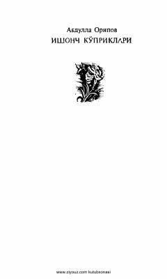

IKAbdulla Oripovning she'rlar, tarjimalar va dostonlardan iborat she'riy to'plami.
Ushbu to'plam taniqli o'zbek shoiri Abdulla Oripovning she'rlari, tarjimalari va dramatik dostonlarini o'z ichiga oladi. Kitobda Vatan, ona va hayot mazmuni kabi yuksak insoniy tuyg'ular badiiy mahorat bilan tarannum etilgan.